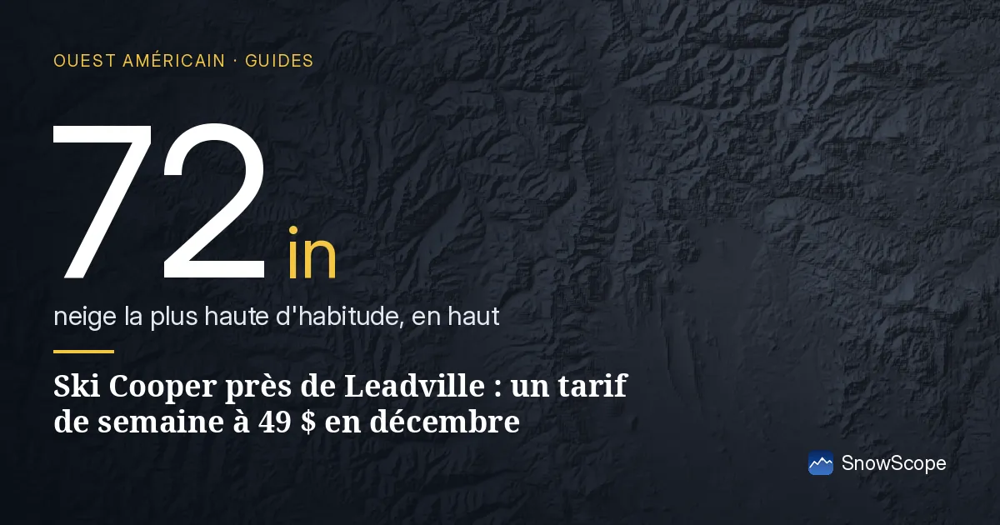

Ski Cooper près de Leadville : un tarif de semaine à 49 $ en décembre
Ski Cooper est le genre d'endroit dont les skieurs petit budget s'échangent les bons plans : une station haute et simple près de Leadville qui a gardé son tarif adulte en semaine à 49 $ pour 2026-27. La neige de décembre y est modeste plutôt qu'abondante, mais très haute et très précoce.
Consultez les prévisions neige en temps réel pour Ski Cooper sur l'application SnowScopeHauteurs de neige, alertes poudreuse et carte 3D, gratuitement.
L'altitude, l'argument de vente
Les remontées de Cooper démarrent vers 10 580 pieds (3 226 m) et montent jusqu'à environ 11 740 pieds (3 579 m) sur notre cartographie, avec 5 remontées et environ 20 mi (32 km) de pistes. Un hiver type de notre historique, la neige durable arrive à mi-montagne début octobre, ce qui est parmi les plus précoces du Colorado.

Épaisseur modeste, bonnes chances
La neige ne s'accumule pas vite pour autant. Un 1er décembre type, à mi-montagne, vers 11 160 pieds (3 402 m), on compte 18 in (46 cm) ; le 15 décembre, 26 in (66 cm) ; le jour de Noël, 31 in (79 cm). Le sommet est à peine plus profond, 27 in (69 cm) un 15 décembre type.
Le 15 décembre, 70 % des hivers avaient 20 in (50 cm) ou plus à mi-montagne, et 91 % avaient au moins 10 in (25 cm). Au 25 décembre, la part au-dessus de 20 in atteint 80 %. Un décembre maigre laisse 11 in (29 cm) le 15 : suffisant pour le terrain damé et doux pour lequel Cooper est connu.

La formule semaine
Pour 2026-27, Ski Cooper maintient les tarifs de l'an dernier : un forfait journée adulte (22-68 ans) coûte 49 $ du lundi au vendredi, hors jours fériés, et 99 $ le week-end et les jours fériés. Toute la stratégie petit budget tient en une phrase : skiez à Cooper en semaine.
Cooper, Loveland ou Vail ?
Loveland, l'autre station haute du Front Range, vend en ligne à 60 $ jusqu'au 13 décembre puis au prix guichet de 159 $ à partir du 14 décembre, avec 29 in (74 cm) à mi-montagne un 15 décembre type et 67 % des hivers au-dessus de 20 in. Une neige similaire, et le tarif semaine de Cooper reste plus bas tout le mois.
Vail, le grand complexe voisin, avait 24 in (62 cm) à mi-montagne un 15 décembre type selon nos chiffres ; nous n'avons pas comparé ses prix. Début décembre au moins, l'altitude de Cooper le place au niveau de son célèbre voisin côté neige.
Avant et maintenant
Cooper a mieux tenu que beaucoup d'autres : l'épaisseur type du 15 décembre à mi-montagne était de 26 in (66 cm) sur les 15 premiers hivers de notre historique et de 24 in (60 cm) sur les 15 derniers, bien que la part au-dessus de 20 in soit tombée de 80 % à 53 %. L'hiver dernier avait 16 in (42 cm) à cette date.
Conseils aux skieurs
- Skiez du lundi au vendredi hors jours fériés pour le tarif à 49 $.
- Leadville est à environ 10 000 pieds : passez-y une nuit avant de skier intensément.
- Tennessee Pass (US-24) peut être verglacé et venteux : prenez des chaînes et vérifiez l'état de la route avant de partir.
- Le froid est le principal danger de début de saison ici : prévoyez des couches plus chaudes que vous ne le pensez.
Références et crédits
- Ski Cooper, day pass 2026-27 (official) www.skicooper.com/cooper-day-pass/
- Loveland Ski Area, lift tickets 2026-27 (official) skiloveland.com/lift-tickets/
- OpenSkiMap (mapped lifts and runs) openskimap.org/
- avalanche.org, US avalanche centers and forecasts avalanche.org/
À propos de ces chiffres
Chiffres de neige : historique SnowScope, 46 hivers passés (1980-81 à 2025-26) aux altitudes indiquées (bas, mi-pente, sommet), une reconstitution de la neige passée pour une zone, corrigée de l'altitude (base ERA5-Land ; Snow_Hydro 1 km pour le Maroc), pas les bulletins de la station. Neige actuelle : la carte SnowScope. Remontées, pistes et altitudes : cartographie OpenSkiMap. Prix : les pages officielles listées ci-dessous, consultées le 13 novembre 2026 ; les prix dynamiques varient avec la date et la demande.
Bulletins d'avalanche officiels: Colorado Avalanche Information Center
Citer ce bulletin
Pour la recherche, l'enseignement ou la presse : chiffres et graphiques réutilisables librement sous CC BY 4.0 avec cette citation.
SnowScope (2026), Ski Cooper près de Leadville : un tarif de semaine à 49 $ en décembre, https://snowscope.app/blog/fr/2026/11/ski-cooper-leadville-december-49-dollar-weekday.html, consulté le 2026-11-15
SnowScope (Atlas Labs). (2026, November 15). Ski Cooper près de Leadville : un tarif de semaine à 49 $ en décembre. SnowScope snow reports. https://snowscope.app/blog/fr/2026/11/ski-cooper-leadville-december-49-dollar-weekday.html
BibTeX
@misc{snowscope2026skicooperleadvilledecemb,
author = {{SnowScope (Atlas Labs)}},
title = {Ski Cooper près de Leadville : un tarif de semaine à 49 $ en décembre},
year = {2026},
month = nov,
howpublished = {\url{https://snowscope.app/blog/fr/2026/11/ski-cooper-leadville-december-49-dollar-weekday.html}},
note = {Published 2026-11-15 09:34 UTC; accessed 2026-11-15}
}· CC BY 4.0 · Méthodes, données et outils →
Ski Cooper : neige et température selon l'altitude, cet hiver vs l'hiver dernier (outils) →
Suivre Ski Cooper
Gratuit : un message quand la neige arrive, et la météo chaque matin.